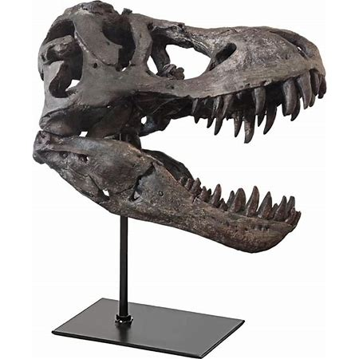
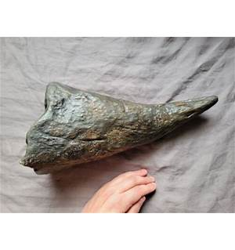
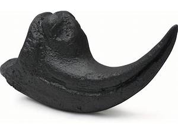
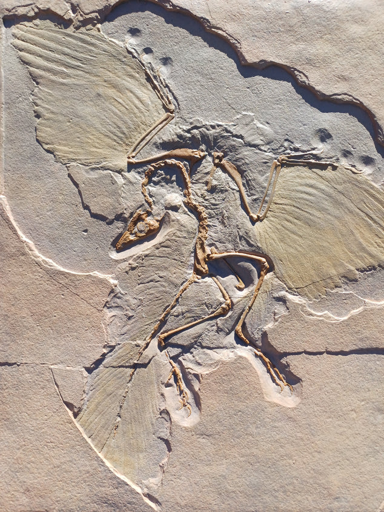

🦖 Tyrannosaurus Rex Skull Replica
This highly detailed, life-size replica of a T. rex skull captures the terrifying essence of the mighty predator.
 Buy Now🦕 Triceratops Horn Fossil
A beautifully preserved replica of a Triceratops horn, perfect for any fan of the iconic herbivorous dinosaur.
 Buy Now🦖 Velociraptor Claw Replica
This authentic-looking Velociraptor claw replica brings a touch of danger to your fossil collection.
 Buy Now🌿 Archaeopteryx Fossil
A stunning replica of the fossil from Archaeopteryx, the bird-like dinosaur that was a link between dinosaurs and modern birds.
 Buy Now